Inhalt Index DeskTop Bronstein

 Funktionalanalysis Stetige lineare Operatoren und Funktionale Lineare stetige Operatoren in Banach-Räumen
Funktionalanalysis Stetige lineare Operatoren und Funktionale Lineare stetige Operatoren in Banach-Räumen


Ein Operator 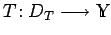 mit 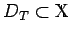 heißt abgeschlossen, wenn aus 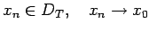 in  und 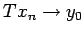 in
und 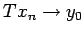 in  stets 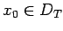 und y0=Tx0 folgen. Notwendig und hinreichend dafür ist die Abgeschlossenheit des Graphen des Operators T im Raum 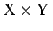, d.h. der Menge
stets 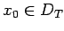 und y0=Tx0 folgen. Notwendig und hinreichend dafür ist die Abgeschlossenheit des Graphen des Operators T im Raum 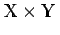, d.h. der Menge
wobei (x,y) hier die Bezeichnung für ein Element der Menge 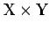 ist. Es gilt: Ist T ein abgeschlossener Operator mit abgeschlossenem Definitionsbereich 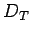, dann ist T stetig.